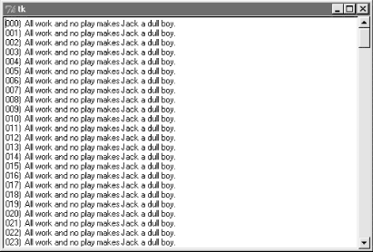
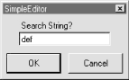

| I l@ve RuBoard |
|
8.4 TextIt's been said that Tkinter's strongest points may be its text and canvas widgets. Both provide a remarkable amount of functionality. For instance, the Tkinter Text widget was powerful enough to implement the Grail web browser, discussed in Chapter 15; it supports complex font style settings, embedded images, and much more. The Tkinter Canvas widget, a general-purpose drawing device, has also been the basis of sophisticated image processing and visualization applications. In Chapter 9, we'll put these two widgets to use to implement text editors (PyEdit), paint programs (PyDraw), clock GUIs (PyClock), and photo slideshows (PyView). For the purposes of this tour chapter, though, let's start out using these widgets in simpler ways. Example 8-10 implements a simple scrolled-text display, which knows how to fill its display with a text string or file. Example 8-10. PP2E\Gui\Tour\scrolledtext.py# a simple text or file viewer component
print 'PP2E scrolledtext'
from Tkinter import *
class ScrolledText(Frame):
def __init__(self, parent=None, text='', file=None):
Frame.__init__(self, parent)
self.pack(expand=YES, fill=BOTH) # make me expandable
self.makewidgets()
self.settext(text, file)
def makewidgets(self):
sbar = Scrollbar(self)
text = Text(self, relief=SUNKEN)
sbar.config(command=text.yview) # xlink sbar and text
text.config(yscrollcommand=sbar.set) # move one moves other
sbar.pack(side=RIGHT, fill=Y) # pack first=clip last
text.pack(side=LEFT, expand=YES, fill=BOTH) # text clipped first
self.text = text
def settext(self, text='', file=None):
if file:
text = open(file, 'r').read()
self.text.delete('1.0', END) # delete current text
self.text.insert('1.0', text) # add at line 1, col 0
self.text.mark_set(INSERT, '1.0') # set insert cursor
self.text.focus() # save user a click
def gettext(self): # returns a string
return self.text.get('1.0', END+'-1c') # first through last
if __name__ == '__main__':
root = Tk()
try:
st = ScrolledText(file=sys.argv[1]) # filename on cmdline
except IndexError:
st = ScrolledText(text='Words\ngo here') # or not: 2 lines
def show(event): print repr(st.gettext()) # show as raw string
root.bind('<Key-Escape>', show) # esc = dump text
root.mainloop()
Like the ScrolledList of Example 8-9, the ScrolledText object in this file is designed to be a reusable component, but can also be run standalone to display text file contents. Also like the last section, this script is careful to pack the scrollbar first so that it is cut out of the display last as the window shrinks, and arranges for the embedded Text object to expand in both directions as the window grows. When run with a filename argument, this script makes the window shown in Figure 8-15; it embeds a Text widget on the left, and a cross-linked Scrollbar on the right. Figure 8-15. scrolledtext in actionJust for fun, I populated the text file displayed in the window with the following code and command lines (and not just because I happen to live near an infamous hotel in Colorado): C:\...\PP2E\Gui\Tour>type temp.py
f = open('temp.txt', 'w')
for i in range(250):
f.write('%03d) All work and no play makes Jack a dull boy.\n' % i)
f.close()
C:\...\PP2E\Gui\Tour>python temp.py
C:\...\PP2E\Gui\Tour>python scrolledtext.py temp.txt
PP2E scrolledtext
To view a file, pass its name on the command line -- its text is automatically displayed in the new window. By default, it is shown in a non-fixed-width font, but we'll pass a font option to the text widget in the next example to change that. Notice the "PP2E scrolledtext" message printed when this script runs. Because there is also a ScrolledText.py file in the standard Python distribution with a very different interface, the one here identifies itself when run or imported so you can tell which one you've got. If the standard one ever goes away, import the one listed here for a simple text browser, and adjust configuration calls to include a ".text" qualifier level (the library version subclasses Text, not Frame). 8.4.1 Programming the Text WidgetTo understand how this script works at all, though, we have to detour into a few Text widget details here. Earlier we met the Entry and Message widgets, which address a subset of the Text widget's uses. The Text widget is much richer in both features and interfaces -- it supports both input and display of multiple lines of text, editing operations for both programs and interactive users, multiple fonts and colors, and much more. Text objects are created, configured, and packed just like any other widget, but they have properties all their own. 8.4.1.1 Text is a Python stringAlthough the Text widget is a powerful tool, its interface seems to boil down to two core concepts. First of all, the content of a Text widget is represented as a string in Python scripts, and multiple lines are separated with the normal \n line terminator. The string 'Words\ngo here', for instance, represents two lines when stored in or fetched from a Text widget; it would normally have a trailing \n too, but doesn't have to. To help illustrate this point, this script binds the Escape key press to fetch and print the entire contents of the Text widget it embeds: C:\...\PP2E\Gui\Tour>python scrolledtext.py PP2E scrolledtext 'Words\012go here' 'Always look\012on the bright\012side of life\012' When run with arguments, the script stores a file's contents in the text widget. When run without arguments, the script stuffs a simple literal string into the widget, displayed by the first Escape press output here (recall that \012 is the octal escape form of the \n line terminator). The second output here happens when pressing Escape in the shrunken window captured in Figure 8-16. Figure 8-16. scrolledtext gets a positive outlook8.4.1.2 String positionsThe second key to understanding Text code has to do with the ways you specify a position in the text string. Like the listbox, text widgets allow you to specify such a position in a variety of ways. In Text, methods that expect a position to be passed in will accept an index, a mark, or a tag reference. Moreover, some special operations are invoked with predefined marks and tags -- the insert cursor is mark INSERT, and the current selection is tag SEL. 8.4.1.2.1 Text indexesBecause it is a multiple-line widget, Text indexes identify both a line and a column. For instance, consider the interfaces of the basic insert, delete, and fetch text operations used by this script: self.text.insert('1.0', text) # insert text at the start
self.text.delete('1.0', END) # delete all current text
return self.text.get('1.0', END+'-1c') # fetch first through last
In all of these, the first argument is an absolute index that refers to the start of the text string: string "1.0" means row 1, column (rows are numbered from 1 and columns from 0). An index "2.1" refers to the second character in the second row. Like the listbox, text indexes can also be symbolic names: the END in the preceding delete call refers to the position just past the last character in the text string (it's a Tkinter variable preset to string "end"). Similarly, the symbolic index INSERT (really, string "insert") refers to the position immediately after the insert cursor -- the place where characters would appear if typed at the keyboard. Symbolic names like INSERT can also be called marks, described in a moment. For added precision, you can add simple arithmetic extensions to index strings. The index expression END+'-1c' in the get call in the previous example, for instance, is really the string "end-1c", and refers to one character back from END. Because END points to just beyond the last character in the text string, this expression refers to the last character itself. The -1c extension effectively strips the trailing \n that this widget adds to its contents (and may add a blank line if saved in a file). Similar index string extensions let you name characters ahead (+1c), lines ahead and behind (+2l, -2l), and specify things like word and line starts around an index (lineend, wordstart). Indexes show up in most Text widget calls. 8.4.1.2.2 Text marksBesides row/column identifier strings, you can also pass positions as names of marks -- symbolic names for a position between two characters. Unlike absolute row/column positions, marks are virtual locations that move as new text is inserted or deleted (by your script or your user). A mark always refers to its original location, even if that location shifts to a different row and column over time. To create a mark, call the text mark_set method with a string name and an index to give its logical location. For instance, this script sets the insert cursor at the start of the text initially, with a call like the first one here: self.text.mark_set(INSERT, '1.0') # set insert cursor to start
self.text.mark_set('linetwo', '2.0') # mark current line 2
The name INSERT is a predefined special mark that identifies the insert cursor position; setting it changes the insert cursor's location. To make a mark of your own, simply provide a unique name as in the second call here, and use it anywhere you need to specify a text position. The mark_unset call deletes marks by name. 8.4.1.2.3 Text tagsIn addition to absolute indexes and symbolic mark names, the Text widget supports the notion of tags -- symbolic names associated with one or more substrings within the Text widget's string. Tags can be used for many things, but they also serve to represent a position anywhere you need one: tagged items are named by their beginning and ending indexes, which can be later passed to position-based calls. For example, Tkinter provides a built-in tag name SEL -- a Tkinter name preassigned to string "sel" -- which automatically refers to currently selected text. To fetch the text selected (highlighted) with a mouse, run either of these calls: text = self.text.get(SEL_FIRST, SEL_LAST) # use tags for from/to indexes
text = self.text.get('sel.first', 'sel.last') # strings and constants work
The names SEL_FIRST and SEL_LAST are just preassigned variables in the Tkinter module that refer to the strings used in the second line here. The text get method expects two indexes; to fetch text names by a tag, add .first and .last to the tag's name to get its start and end indexes. To tag a substring, call the text widget's tag_add method with a tag name string and start and stop positions (text can also be tagged as added in insert calls). To remove a tag from all characters in a range of text, call tag_remove: self.text.tag_add('alltext', '1.0', END) # tag all text in the widget
self.text.tag_add(SEL, index1, index2) # select from index1 up to index2
self.text.tag_remove(SEL, '1.0', END) # remove selection from all text
The first line here creates a new tag that names all text in the widget -- from start through end positions. The second line adds a range of characters to the built-in SEL selection tag -- they are automatically highlighted, because this tag is predefined to configure its members that way. The third line removes all characters in the text string from the SEL tag (all selections are unselected). Note that the tag_remove call just untags text within the named range; to really delete a tag completely, call tag_delete instead. You can map indexes to tags dynamically too. For example, the text search method returns the row.column index of the first occurrence of a string between start and stop positions. To automatically select the text thus found, simply add its index to the built-in SEL tag: where = self.text.search(target, INSERT, END) # search from insert cursor
pastit = where + ('+%dc' % len(target)) # index beyond string found
self.text.tag_add(SEL, where, pastit) # tag and select found string
self.text.focus() # select text widget itself
If you only want one string to be selected, be sure to first run the tag_remove call listed earlier -- this code adds a selection in addition to any selections that already exist (it may generate multiple selections in the display). In general, you can add any number of substrings to a tag to process them as a group. To summarize: indexes, marks, and tag locations can be used anytime you need a text position. For instance, the text see method scrolls the display to make a position visible; it accepts all three kinds of position specifiers: self.text.see('1.0') # scroll display to top
self.text.see(INSERT) # scroll display to insert cursor mark
self.text.see(SEL_FIRST) # scroll display to selection tag
Text tags can also be used in broader ways for formatting and event bindings, but I'll defer those details until the end of this section. 8.4.2 Adding Text-Editing OperationsExample 8-11 puts some of these concepts to work. It adds support for four common text-editing operations -- file save, text cut and paste, and string find searching -- by subclassing ScolledText to provide additional buttons and methods. The Text widget comes with a set of default keyboard bindings that perform some common editing operations too, but they roughly mimic the Unix Emacs editor, and are somewhat obscure; it's more common and user-friendly to provide GUI interfaces to editing operations in a GUI text editor. Example 8-11. PP2E\Gui\Tour\simpleedit.py#########################################################
# add common edit tools to scrolled text by inheritance;
# composition (embedding) would work just as well here;
# this is not robust! see PyEdit for a feature superset;
#########################################################
from Tkinter import *
from tkSimpleDialog import askstring
from tkFileDialog import asksaveasfilename
from quitter import Quitter
from scrolledtext import ScrolledText # here, not Python's
class SimpleEditor(ScrolledText): # see PyEdit for more
def __init__(self, parent=None, file=None):
frm = Frame(parent)
frm.pack(fill=X)
Button(frm, text='Save', command=self.onSave).pack(side=LEFT)
Button(frm, text='Cut', command=self.onCut).pack(side=LEFT)
Button(frm, text='Paste', command=self.onPaste).pack(side=LEFT)
Button(frm, text='Find', command=self.onFind).pack(side=LEFT)
Quitter(frm).pack(side=LEFT)
ScrolledText.__init__(self, parent, file=file)
self.text.config(font=('courier', 9, 'normal'))
def onSave(self):
filename = asksaveasfilename()
if filename:
alltext = self.gettext() # first through last
open(filename, 'w').write(alltext) # store text in file
def onCut(self):
text = self.text.get(SEL_FIRST, SEL_LAST) # error if no select
self.text.delete(SEL_FIRST, SEL_LAST) # should wrap in try
self.clipboard_clear()
self.clipboard_append(text)
def onPaste(self): # add clipboard text
try:
text = self.selection_get(selection='CLIPBOARD')
self.text.insert(INSERT, text)
except TclError:
pass # not to be pasted
def onFind(self):
target = askstring('SimpleEditor', 'Search String?')
if target:
where = self.text.search(target, INSERT, END) # from insert cursor
if where: # returns an index
print where
pastit = where + ('+%dc' % len(target)) # index past target
#self.text.tag_remove(SEL, '1.0', END) # remove selection
self.text.tag_add(SEL, where, pastit) # select found target
self.text.mark_set(INSERT, pastit) # set insert mark
self.text.see(INSERT) # scroll display
self.text.focus() # select text widget
if __name__ == '__main__':
try:
SimpleEditor(file=sys.argv[1]).mainloop() # filename on command line
except IndexError:
SimpleEditor().mainloop() # or not
This, too, was written with one eye toward reuse -- the SimpleEditor class it defines could be attached or subclassed by other GUI code. As I'll explain at the end of this section, though, it's not yet as robust as a general-purpose library tool should be. Still, it implements a functional text editor in a small amount of portable code. When run standalone, it brings up the window in Figure 8-17 (shown running in Windows); index positions are printed on stdout after each successful find operation: C:\...\PP2E\Gui\Tour>python simpleedit.py simpleedit.py PP2E scrolledtext 14.4 24.4 Figure 8-17. simpleedit in action The save operation pops up the common save dialog available in Tkinter, and tailored to look native on each platform. Figure 8-18 shows this dialog in action on Windows. Find operations also pop up a standard dialog box to input a search string (Figure 8-19); in a full-blown editor, you might want to save this string away to repeat the find again (we will, in the next chapter's PyEdit). Figure 8-18. Save pop-up dialog on WindowsFigure 8-19. Find pop-up dialog8.4.2.1 Using the clipboardBesides text widget operations, Example 8-11 applies the Tkinter clipboard interfaces in its cut and paste functions. Together, these operations allow you to move text within a file (cut in one place, paste in another). The clipboard they use is just a place to store data temporarily -- deleted text is placed on the clipboard on a cut, and text is inserted from the clipboard on a paste. If we restrict our focus to this program alone, there really is no reason that the text string cut couldn't simply be stored in a Python instance variable. But the clipboard is actually a much larger concept. The clipboard used by this script is an interface to a systemwide storage space, shared by all programs on your computer. Because of that, it can be used to transfer data between applications, even ones that know nothing of Tkinter. For instance, text cut or copied in a Microsoft Word session can be pasted in a SimpleEditor window, and text cut in SimpleEditor can be pasted in a Microsoft Notepad window (try it). By using the clipboard for cut and paste, SimpleEditor automatically integrates with the window system at large. Moreover, the clipboard is not just for the text widget -- it can also be used to cut and paste graphical objects in the Canvas widget (discussed next). As used in this script, the basic Tkinter clipboard interface looks like this: self.clipboard_clear() # clear the clipboard self.clipboard_append(text) # store a text string on it text = self.selection_get(selection='CLIPBOARD') # fetch contents, if any All of these calls are available as methods inherited by all Tkinter widget objects because they are global in nature. The CLIPBOARD selection used by this script is available on all platforms (a PRIMARY selection is also available, but is only generally useful on X Windows, so we'll ignore it here). Notice that the clipboard selection_get call throws a TclError exception if it fails; this script simply ignores it and abandons a paste request, but we'll do better later. 8.4.2.2 Composition versus inheritanceAs coded, SimpleEditor uses inheritance to extend ScrolledText with extra buttons and callback methods. As we've seen, it's also reasonable to attach (embed) GUI objects coded as components, like ScrolledText. The attachment model is usually called composition; some people find it simpler to understand, and less prone to name clashes than extension by inheritance. To give you an idea of the differences between these two approaches, the following sketches the sort of code you would write to attach a ScrolledText to SimpleEditor with changed lines in bold font (see file simpleedit-2.py on the CD for a complete composition implementation). It's mostly a matter of passing in the right parents, and adding an extra "st" attribute name to get to the Text widget's methods: class SimpleEditor(Frame):
def __init__(self, parent=None, file=None):
Frame.__init__(self, parent)
self.pack()
frm = Frame(self)
frm.pack(fill=X)
Button(frm, text='Save', command=self.onSave).pack(side=LEFT)
...more...
Quitter(frm).pack(side=LEFT)
self.st = ScrolledText(self, file=file) # attach, not subclass
self.st.text.config(font=('courier', 9, 'normal'))
def onSave(self):
filename = asksaveasfilename()
if filename:
alltext = self.st.gettext() # go through attribute
open(filename, 'w').write(alltext)
def onCut(self):
text = self.st.text.get(SEL_FIRST, SEL_LAST)
self.st.text.delete(SEL_FIRST, SEL_LAST)
...more...
The window looks identical when such code is run. I'll let you be the judge of whether composition or inheritance is better here. If you code your Python GUI classes right, they will work under either regime. 8.4.2.3 It's called "Simple" for a reasonFinally, before you change your system registry to make SimpleEditor your default text file viewer, I should mention that although it shows the basics, it's something of a stripped-down version of the PyEdit example we'll meet in Chapter 9. In fact, you should study that example now if you're looking for more complete Tkinter text processing code in general. Because the text widget is so powerful, it's difficult to demonstrate more of its features without the volume of code that is already listed in the PyEdit program. I should also point out that SimpleEditor is not only limited in function, it's just plain careless -- many boundary cases go unchecked and trigger uncaught exceptions that don't kill the GUI, but are not handled or reported. Even errors that are caught are not reported to the user (e.g., a paste, with nothing to be pasted). Be sure to see the PyEdit example for a more robust and complete implementation of the operations introduced in SimpleEditor. 8.4.3 Advanced Text and Tag OperationsBesides position specifiers, text tags can also be used to apply formatting and behavior to both all characters in a substring, and all substrings added to a tag. In fact, this is where much of the power of the text widget lies:
With tags, it's possible to display multiple configurations within the same text widget; for instance, you can apply one font to the text widget at large, and other fonts to tagged text. In addition, the text widget allows you to embed other widgets at an index (they are treated like a single character), as well as images. Example 8-12 illustrates the basics of all these advanced tools at once, and draws the interface captured in Figure 8-20. This script applies formatting and event bindings to three tagged substrings, displays text in two different font and color schemes, and embeds an image and a button. Double-clicking any of the tagged substrings (or the embedded button) with a mouse triggers an event that prints a "Got tag event" message to stdout. Example 8-12. PP2E\Gui\Tour\texttags.py# demo advanced tag and text interfaces
from Tkinter import *
root = Tk()
def hello(event): print 'Got tag event'
# make and config a Text
text = Text()
text.config(font=('courier', 15, 'normal')) # set font for all
text.config(width=20, height=12)
text.pack(expand=YES, fill=BOTH)
text.insert(END, 'This is\n\nthe meaning\n\nof life.\n\n') # insert 6 lines
# embed windows and photos
btn = Button(text, text='Spam', command=lambda: hello(0)) # embed a button
btn.pack()
text.window_create(END, window=btn) # embed a photo
text.insert(END, '\n\n')
img = PhotoImage(file='../gifs/PythonPowered.gif')
text.image_create(END, image=img)
# apply tags to substrings
text.tag_add('demo', '1.5', '1.7') # tag 'is'
text.tag_add('demo', '3.0', '3.3') # tag 'the'
text.tag_add('demo', '5.3', '5.7') # tag 'life'
text.tag_config('demo', background='purple') # change colors in tag
text.tag_config('demo', foreground='white') # not called bg/fg here
text.tag_config('demo', font=('times', 16, 'underline')) # change font in tag
text.tag_bind('demo', '<Double-1>', hello) # bind events in tag
root.mainloop()
Figure 8-20. Text tags in actionSuch embedding and tag tools could ultimately be used to render a web page. In fact, Python's standard htmllib HTML parser module can help automate web page GUI construction. As you can probably tell, though, the text widget offers more GUI programming options than we have space to list here. For more details on tag and text options, consult other Tk and Tkinter references. Right now, art class is about to begin. |
| I l@ve RuBoard |
|